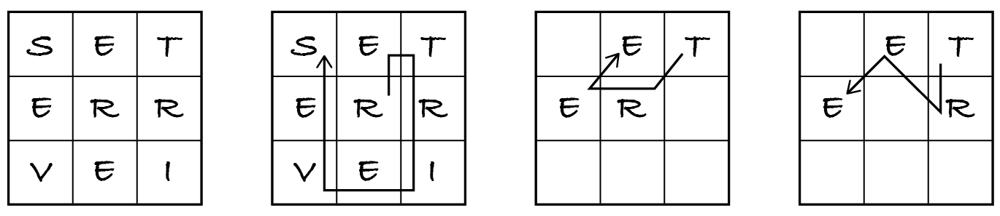

22.3. Trackword
Trackword is a puzzle to find as many words with three to nine letters as we can in a 3×3 grid of letters. We can start in any square and move to any adjacent square, without visiting any square twice. The grid always contains a 9-letter word.
Here’s an example created by a fan site. The figure shows the grid, the path for the 9-letter word ‘retrieves’ and two paths for the word ‘tree’. The grid also includes words ire, set, tee, sever, reset, reverse, serve, etc.
For this and other word problems we need a list of valid words. The notebooks folder for this chapter includes the public-domain Enable list, which contains long and inflected words (past tense, plural, etc.). The words in the list are in lowercase, so the grid will be in lowercase too.
Info: Enable and other word lists are available from the The National Puzzler’s League.
The following code reads words with three to nine letters from the file. It uses Python constructs outside the scope of M269.
[1]:
vocabulary = set()
with open("enable1.txt") as file:
for line in file:
word = line.strip()
if 3 <= len(word) <= 9:
vocabulary.add(word)
Let’s solve this problem with backtracking. I will ask you to think along with ‘stop and think’ lines.
22.3.1. The problem
The first thing to ponder is whether this problem is adequate for backtracking:
Is this a constraint satisfaction problem on sequences of unique items? If so, what are the sequences, why are items unique and what are the other constraints?
Yes, it is. We want to find all sequences of squares subject to these constraints: the length of the sequence is three to nine, the sequence is a valid path and the letters on the squares form a word. No square can be visited twice so the sequence has no duplicate squares.
Which of the constraints are global and which are local?
The global constraints are that the sequence forms a word and the word comprises three to nine letters. The local constraint is that each square in the sequence (except the first one) must be adjacent to the previous one.
Note: Backtracking is usually applicable to problems involving paths on 2D grids.
22.3.2. Candidates and extensions
Let’s start solving this problem. The core of backtracking is to extend a candidate sequence with one item at a time, taken from an initial set with all possible extensions. So the obvious starting questions to solve a problem are:
What are the candidates? What do they represent?
What are the items in the candidates? What do items represent?
There are only two options for what a candidate can be: the string of letters or the path of squares visited so far. As the example at the start shows, there may be several paths associated to the same string. If a candidate were a string, we couldn’t determine which squares can be visited next. The candidates are therefore paths: each one is a sequence of squares visited.
Each item represents a square of the grid.
Once we have thought what each item represents in the problem, we need to think how to represent each item in the solution.
What data structure should we use for each item?
What is the initial set of all possible extensions? How can it be generated?
We can store each square as a pair of integers with the square’s row-column coordinates.
The initial extensions are all 9 squares of the grid. They can be generated with a nested loop iterating over all rows and columns of the grid.
At this point we know the problem’s inputs and the initial extensions, which is enough to write the main function. I always pass the problem’s inputs to the backtracking function because it may need them to check the global and local constraints.
[2]:
def trackword(grid: list, valid: set) -> list:
"""Return all words found in the grid, in the order generated.
Preconditions:
- grid is a 3 by 3 table of lowercase letters
- valid is a set of strings of allowed words
"""
path = [] # the initial candidate
squares = set() # the extensions
for row in range(3):
for column in range(3):
squares.add((row, column))
solutions = []
extend(path, squares, grid, valid, solutions)
return solutions
The backtracking algorithm needs an extra if-statement if only complete candidates can be solutions, so the next thing to consider is:
Which candidates are solutions: only complete candidates or both complete and partial candidates?
The words in the grid can be of any length from 3 to 9, so both partial and complete paths may be solutions.
We can now write the backtracking algorithm, because it’s boilerplate code that calls two auxiliary functions, passing them the problem’s input in case they need it.
[3]:
def extend(path: list, squares: set, grid: list, valid: set, solutions: list) -> None:
"""Extend the path with the squares. Add valid words to solutions."""
if is_word(path, grid, valid): # check the global constraints
solutions.append(path)
As I write the last line I stop in my tracks. The candidates are paths in the grid, but the problem asks for the words, so I must convert each path of squares to the corresponding string of letters.
[4]:
def path_to_string(path: list, grid: list) -> str:
"""Return the sequence of letters visited by the path in the grid."""
string = ""
for square in path:
string = string + grid[square[0]][square[1]]
return string
Now I can write the complete backtracking algorithm.
[5]:
def extend(path: list, squares: set, grid: list, valid: set, solutions: list) -> None:
"""Extend the path with the squares. Add valid words to solutions."""
if is_word(path, grid, valid):
solutions.append(path_to_string(path, grid))
for square in squares:
if can_extend(square, path, grid, valid):
extend(path + [square], squares - {square}, grid, valid, solutions)
Finally, let’s implement the auxiliary functions.
22.3.3. The constraints
The global constraints on a path are: it has three to nine letters and they form a valid word. Since only words with three to nine letters were read from the file, I can simply check if the path forms a word.
[6]:
def is_word(path: list, grid: list, valid: set) -> bool:
"""Check if the letters in the path form a valid word."""
return path_to_string(path, grid) in valid
As for the local constraint, we must check if the next square is adjacent to the last square in the path so far. If the path is empty, it can be extended with any square.
[7]:
def can_extend(square: tuple, path: list, grid: list, valid: set) -> bool:
"""Check if square is adjacent to the last square of path."""
if path == []:
return True
last_square = path[-1]
last_row = last_square[0]
last_column = last_square[1]
row = square[0]
column = square[1]
return abs(row - last_row) < 2 and abs(column - last_column) < 2
That’s it! Let’s check it works. There are probably many words in this grid, so let’s just see a few of them.
[8]:
words = trackword(["set", "err", "vei"], vocabulary)
print("Total paths:", len(words))
print("Found 9-letter word?", "retrieves" in words)
print("First 10:", words[:10])
Total paths: 156
Found 9-letter word? True
First 10: ['ere', 'err', 'errs', 'err', 'ere', 'ers', 'ere', 'eerie', 'eerier', 'res']
Some words occur repeatedly in the output list because there are various paths to obtain them. We can easily compute how many unique words there are:
[9]:
len(set(words)) # convert to set to remove duplicates
[9]:
59
Exercise 22.3.1 (optional)
Looking at the code again, two improvements come to my mind. First, return a set instead of a sequence of words, to avoid duplicates. Second, remove unnecessary parameters. For example, function can_extend doesn’t need the grid and valid arguments.
Copy all functions to the cell below, make the suggested changes and any others you wish and run the code to check it still finds 59 words in the grid.
[10]:
# copy the functions to here
len(trackword(["set", "err", "vei"], vocabulary)) == 59
Exercise 22.3.2 (optional)
Implement a more substantial change: represent each candidate as a sequence–string pair. This is a space–time tradeoff to avoid repeatedly converting a path to a string. When extending a candidate, append a square to the sequence and the corresponding letter to the string.
22.3.4. Template
In general, to solve a problem with backtracking, first think of what the items, candidates and extensions represent and which are the global and local constraints. Then follow this backtracking solution template, replacing the generic function and variable names and docstrings with problem-specific ones, and removing unnecessary parameters.
def problem(instance: object) -> list:
"""Return all solutions for the problem instance, in the order generated."""
candidate = []
extensions = ...
solutions = []
extend(candidate, extensions, instance, solutions)
return solutions
def extend(candidate: list, extensions: set, instance: object, solutions: list) -> None:
"""Add to solutions all extensions of candidate that solve the problem instance."""
# remove next line if partial candidates can be solutions
if len(extensions) == 0:
if satisfies_global(candidate, instance):
solutions.append(candidate)
for item in extensions:
if can_extend(item, candidate, instance):
extend(candidate + [item], extensions - {item}, instance, solutions)
def satisfies_global(candidate: list, instance: object) -> bool:
"""Check if candidate satisfies the global constraints."""
return ...
def can_extend(item: object, candidate: list, instance: object) -> bool:
"""Check if item may extend candidate towards a solution."""
return ...